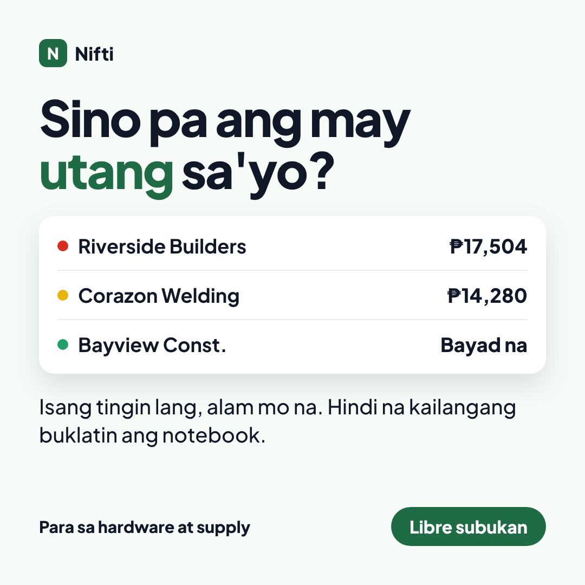
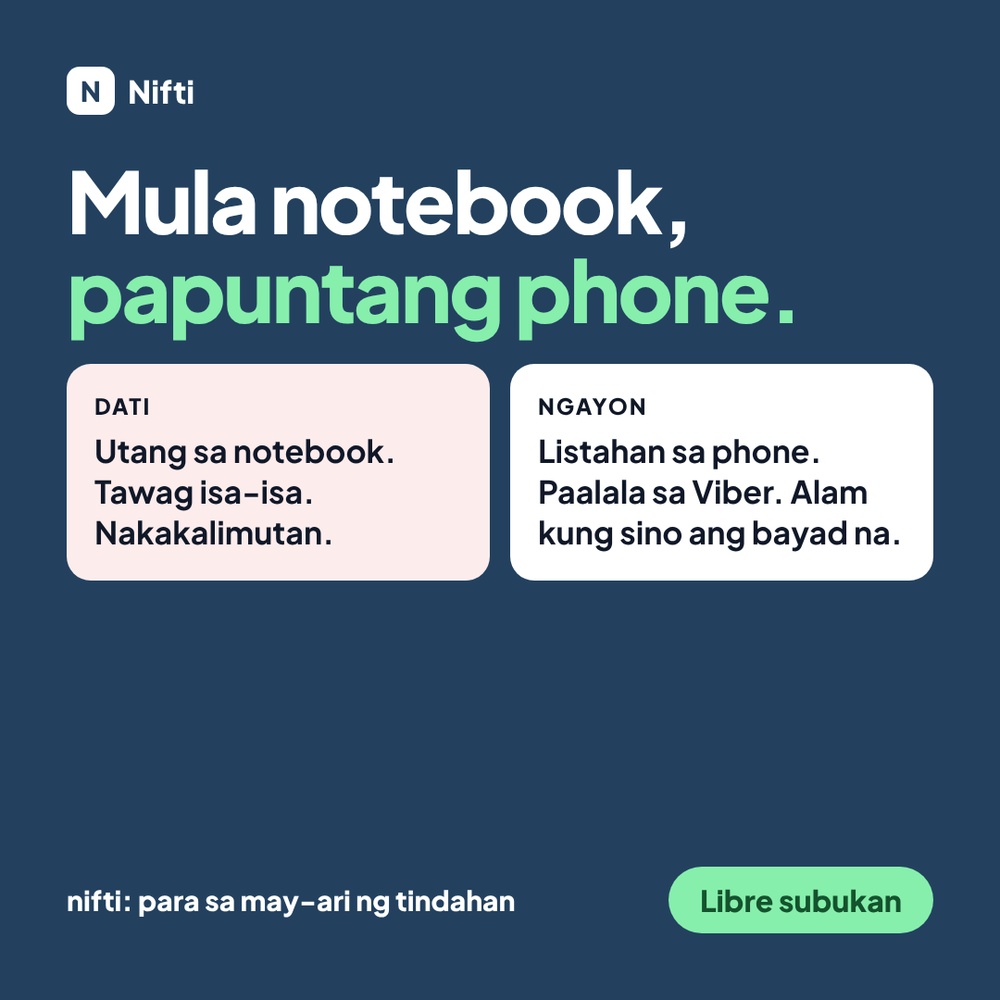
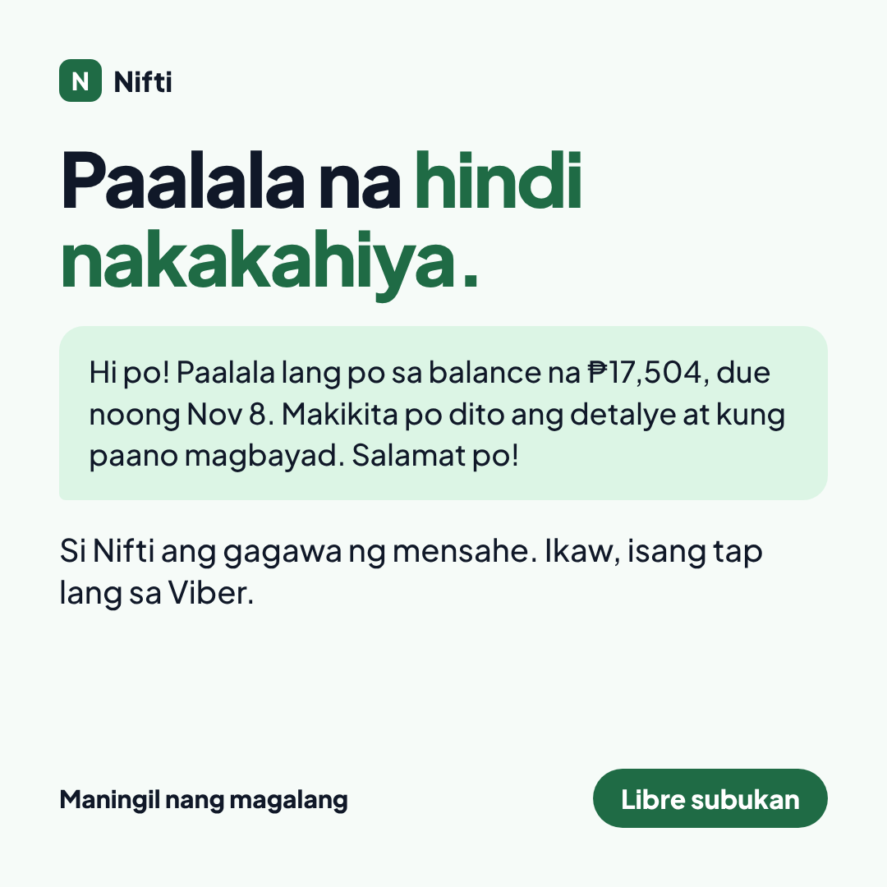
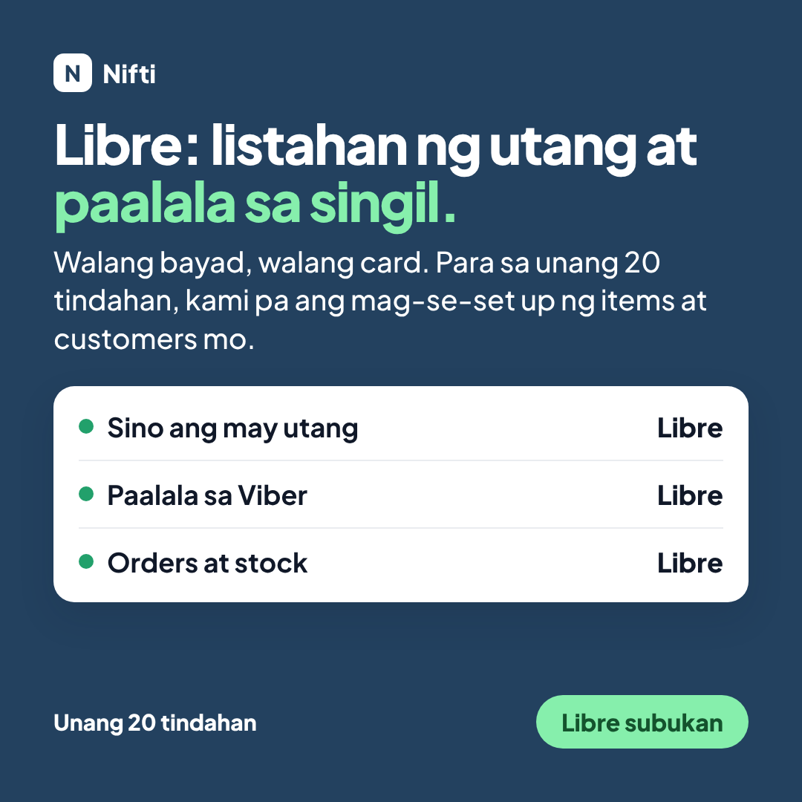
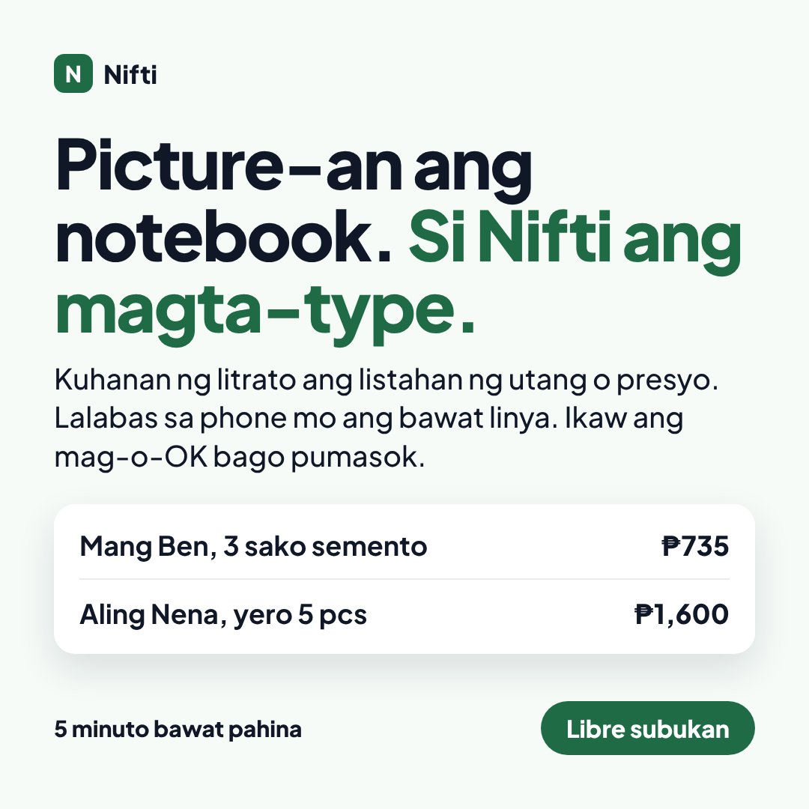

The one thing you are testing
Does a hardware or supply shop collect money faster with Nifti, and will the owner pay ₱990 a month for that? Everything in these 30 days points at that question. Selling to people you sit beside beats posting to strangers, so the plan is half visits and half Facebook.
Links you will paste
- Site and demo: https://siggiebahamas.github.io/Nifti/
- Founder sign-in: https://siggiebahamas.github.io/Nifti/#login
- Founder dashboard: https://siggiebahamas.github.io/Nifti/#admin
The 30 days
| When | What to do |
|---|---|
| Day 1 | Sign up as founder (link below). Open the Founder dashboard. Type your GCash or bank line under Money. |
| Day 2 | Create the Facebook page "Nifti". Profile photo: the Nifti icon. Cover: post image 2. Pin Post 4. Fill in About with the one-liner below. |
| Day 3 | Set up your own shop inside Nifti as if you were a customer: add 10 items, 3 customers, one utang, send yourself a reminder on Viber. Note every place you got stuck and send me the list. |
| Day 4 to 5 | Visit 5 hardware or construction-supply shops in person. Do not pitch. Ask: "How do you track who owes you?" and watch. Then show the demo on your phone for 2 minutes. |
| Day 6 to 7 | Join 10 Facebook groups (search phrases below). Read the rules. Do not post yet. Comment helpfully on 5 posts. |
| Day 8 | Post 1 on your page and in 3 groups that allow it. Answer every comment within the hour by private message. |
| Day 9 to 10 | Sit with the first 3 shops that said yes. Set them up yourself with "Bring your shop in". Stay until one real reminder is sent on Viber. |
| Day 11 | Post 3 (the polite reminder) with the demo video. Groups: 3 new ones. |
| Day 12 to 14 | Visit or call each shop. Ask one question: "Did anyone pay after a reminder?" Write the peso amount down. This number is your whole test. |
| Day 15 | Mid-point check. Target: 8 shops signed up, 5 with real utang in, 3 that sent a reminder. If under half, change the pitch, not the product. |
| Day 16 | Post 2 (before and after). Ask one happy shop for one sentence and their first name. Post it as a quote. |
| Day 17 to 19 | Second round of visits: 10 more shops, in a different street or market. Bring a printed QR that opens the demo. |
| Day 20 | Post 5 (notebook). Offer to read one notebook page free on a video call or in person. |
| Day 21 to 23 | Set up the next 5 shops. Watch each owner use it alone for 5 minutes without helping. Write down every hesitation. |
| Day 24 | Post 4 again with "X of 20 slots left" (use the real number). |
| Day 25 to 27 | Call every shop. Ask: "If Nifti disappeared tomorrow, would you be upset?" Count the yeses. |
| Day 28 | Ask the 3 most active shops to pay ₱990 for next month. Do not discount. Their answer is the result. |
| Day 29 | Write down: shops signed up, shops using it weekly, pesos collected after reminders, shops that agreed to pay. |
| Day 30 | Decide. Go: 10 or more weekly users and 3 or more willing to pay. Fix: people sign up but do not return. Stop: nobody collected a peso faster. |
Your Facebook page
Set it up like this
- Name: Nifti
- Category: Software
- Bio (one line): Listahan ng utang at paalala sa singil, para sa hardware at supply. Libre subukan.
- Button: "Learn more" pointing to https://siggiebahamas.github.io/Nifti/
- Profile photo: the Nifti icon. Cover: post image 2.
- Pinned post: Post 4.
- Auto-reply in Messenger: "Salamat sa message! Ano po ang tindahan ninyo at saan? Sasagot po kami agad."
Five posts, ready to paste
Each has its image. Post one every 3 to 4 days. Taglish, because that is how your buyers write.
All five images and the demo video


Download

Download

Download

Download

DownloadDownload the 12-second demo video (phone size). It shows Home, Getting paid and a reminder being made. Use it with Post 3.
Post 1: the question
Image: post-1-utang.png
Sino pa ang may utang sa'yo ngayon? 🤔 Kung kailangan mo pang buklatin ang notebook para malaman, para sa'yo ito. Gumawa kami ng Nifti para sa mga may-ari ng hardware at supply: isang listahan ng lahat ng may utang, at paalala sa Viber na si Nifti na ang gumagawa ng mensahe. Libre subukan, walang card. May demo na puwede mong pindutin kahit hindi nagsa-sign up: https://siggiebahamas.github.io/Nifti/ Comment "NIFTI" o i-message kami, at tutulungan ka naming mag-umpisa sa isang video call.
Post 2: before and after
Image: post-2-before-after.png
Dati: utang sa notebook, tawag isa-isa, may nakakalimutan. Ngayon: listahan sa phone, paalala sa Viber, alam mo kung sino ang bayad na. Hindi mo kailangang maging techie. Kung marunong kang mag-Viber, kaya mo ito. Subukan ang demo (libre): https://siggiebahamas.github.io/Nifti/
Post 3: the polite reminder
Image: post-3-paalala.png
Nakakahiya bang maningil? Hindi na. Si Nifti ang gagawa ng magalang na mensahe, kasama ang balance at kung paano magbayad. Ikaw, isang tap lang para ipadala sa Viber. May "I've paid" button pa ang customer para sabihing nagbayad na siya. Tingnan kung paano: https://siggiebahamas.github.io/Nifti/
Post 4: the free offer
Image: post-4-libre.png
LIBRE para sa mga tindahan 🙌 ✅ Listahan ng may utang ✅ Paalala sa singil sa Viber ✅ Orders at stock ✅ Tutulungan ka naming mag-umpisa sa video call Walang bayad, walang card, walang kontrata. Gusto lang naming malaman kung nakakatulong talaga. Comment "NIFTI" at ime-message ka namin, o dumiretso dito: https://siggiebahamas.github.io/Nifti/
Post 5: the notebook
Image: post-5-notebook.png
May makapal ka bang notebook ng utang? 📒 Picture-an mo lang ang pahina. Si Nifti ang magta-type ng bawat linya, at ikaw ang mag-o-OK bago pumasok. Mga 5 minuto bawat pahina. Subukan nang libre: https://siggiebahamas.github.io/Nifti/
Where to post
I can't see Facebook from here, so I won't invent group names. Type these into Facebook's search, tap Groups, and join the ones with recent posts and more than 2,000 members. Add your own city to each.
Search phrases
- hardware store owners Philippines
- construction supply Philippines
- hardware business Philippines
- sari-sari store owners
- negosyo tips Philippines
- small business owners Philippines
- wholesalers and distributors Philippines
- buy and sell construction materials [your city]
- [your city] business owners
- bookkeeping for small business Philippines
Rules that keep you from being removed
- Read each group's rules first. Many allow selling only on certain days.
- Ask the admin before your first post. Message below.
- Never paste the same post in 10 groups on one day. Three a day, different words in the first line.
- Answer comments by private message, and fast.
- For two weeks, comment helpfully five times for every one post of your own.
Messages to copy
To a group admin
Hi po! May-ari po ako ng bagong libreng tool para sa mga tindahan na naglilista ng utang at naniningil. Puwede po ba akong mag-post ng isang beses dito? Hindi po ako magsa-spam, at sasagutin ko po lahat ng tanong. Salamat po!
To someone who commented "NIFTI"
Hi po! Salamat sa interes. Ano po ang tindahan ninyo at saan? Ilan po kaya ang customers ninyong may utang ngayon? Puwede ko po kayong tulungang i-set up sa loob ng 20 minuto, libre. Kailan po kayo libre?
In person, at the shop counter
Magandang araw po. Hindi po ako nagbebenta. Nagtatanong lang po ako sa mga may-ari: paano po ninyo nililista kung sino ang may utang? ... (listen) ... May ginawa po akong libreng app para diyan. Dalawang minuto lang po, ipapakita ko sa phone ko.
After one week, to each shop
Hi po! Kumusta po ang Nifti? May nagbayad na po ba pagkatapos ng paalala? Kung may hindi malinaw, sabihin lang po at aayusin ko agad.